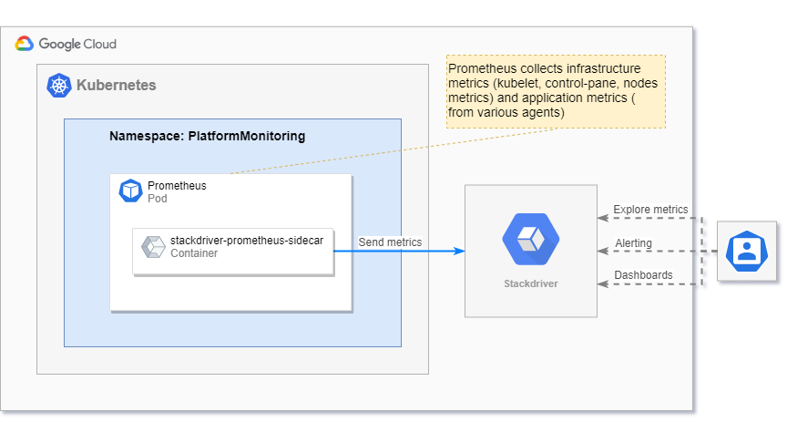

This document provides information about various integration options with Google Cloud Operations tools and managed services.
Google Cloud Operations (Stackdriver)¶
Supported features matrix:
| Monitoring System | Metrics | Dashboards | Alerting | Autoscaling |
|---|---|---|---|---|
| Google Cloud Operations | ✓ Yes | ✗ No | ✗ No | ? |
Legend:
Yes- feature is supported and implementedNo- feature not supported by target monitoring system-- not applicable
The integration between Google Cloud Operations and Monitoring Stack should be configured before deploying Monitoring and it is required to set the correct deployment parameters to enable the necessary features.
Get Metrics from Google Cloud Operations¶
This section describes how to collect metrics from Google Managed services like CloudSQL or BigQuery. To get the metrics, almost all the metrics should use stackdriver-exporter, which allows to collect metrics from Google Cloud Operations.
How to Configure Metrics Collection Using stackdriver-exporter¶
This section provides the details to configure permissions for the working of stackdriver-exporter and to specify necessary parameters into its deployment or other objects.
There are two options which you can use to configure the permissions:
Workload Identity¶
Workload Identity is the recommended way for your workloads running on Google Kubernetes Engine (GKE) to access Google Cloud services in a secure and manageable way.
Before you begin the configuration, refer to the following topics, which describe how to enable and configure GKE to work with Workload Identity:
- Workload Identity - Before you begin: https://cloud.google.com/kubernetes-engine/docs/how-to/workload-identity#before_you_begin
- Workload Identity - Enable: https://cloud.google.com/kubernetes-engine/docs/how-to/workload-identity#enable
After enabling Workload Identity, configure your applications to authenticate to Google Cloud using Workload Identity before you migrate the applications to the new node pools.
You must assign a Kubernetes service account (https://kubernetes.io/docs/tasks/configure-pod-container/configure-service-account/) to the application and configure that Kubernetes service account to act as an IAM service account (https://cloud.google.com/iam/docs/service-accounts).
The following steps describe how to configure your applications to use Workload Identity if it is enabled on the cluster.
Note: If you have already configured the Workload Identity feature, created and granted permissions for Service Account early (for example during upgrade or fresh installation), skip the steps 1-6 and start from step 7.
Also, if you have already pre-created Service Account, you can use it for the deployment using the following parameters:
- Get credentials for your cluster:
Replace <CLUSTER_NAME> with the name of the cluster that has Workload Identity enabled.
- Create a namespace to use for the Kubernetes service account. You can also use the default namespace or any existing namespace.
- Create a Kubernetes service account for your application. You can also use the default Kubernetes service account in the default or any existing namespace.
Replace the following:
<KSA_NAME>- The name of the new Kubernetes service account.-
<NAMESPACE>- The name of the Kubernetes namespace for the service account. -
Create an IAM service account for your application or use an existing IAM service account. You can use any IAM service account in any project in your organization. For Config Connector, apply the
IAMServiceAccountobject for your selected service account.
To create a new IAM service account using the gcloud CLI, run the following command.
Note: If you are using an existing IAM service account with the gcloud CLI, skip this step.
Replace the following:
<GSA_NAME>- The name of the new IAM service account.<GSA_PROJECT.- The project ID of the Google Cloud project for your IAM service account.
For information on authorizing IAM service accounts to access Google Cloud APIs, see Understanding Service Accounts at https://cloud.google.com/iam/docs/understanding-service-accounts.
- Ensure that your IAM service account has the required roles. For details, see https://cloud.google.com/iam/docs/understanding-roles. You can grant additional roles using the following command:
gcloud projects add-iam-policy-binding <PROJECT_ID> \
--member "serviceAccount:<GSA_NAME>@<GSA_PROJECT>.iam.gserviceaccount.com" \
--role "<ROLE_NAME>"
Replace the following:
<PROJECT_ID>- The Google Cloud project ID.<GSA_NAME>- The name of the IAM service account.<GSA_PROJECT>- The project ID of the Google Cloud project of your IAM service account.<ROLE_NAME>- The IAM role to assign to the service account, likeroles/monitoring.viewer.
Note: For correct working of stackdriver-exporter, assign at least the roles/monitoring.viewer role.
- Allow the Kubernetes service account to impersonate the IAM service account by adding an IAM policy binding between the two service accounts. This binding allows the Kubernetes service account to act as the IAM service account.
gcloud iam service-accounts add-iam-policy-binding <GSA_NAME>@<GSA_PROJECT>.iam.gserviceaccount.com \
--role roles/iam.workloadIdentityUser \
--member "serviceAccount:<PROJECT_ID>.svc.id.goog[<NAMESPACE>/<KSA_NAME>]"
- Add annotation for stackdriver Service Account using the following deployment parameters:
stackdriverExporter:
serviceAccount:
create: true
name: stackdriver-exporter
annotations:
iam.gke.io/gcp-service-account: <GSA_NAME>@<PROJECT_ID>.iam.gserviceaccount.com
Alternatively, you can annotate already created Service Account:
kubectl annotate serviceaccount <KSA_NAME> \
--namespace <NAMESPACE> \
iam.gke.io/gcp-service-account=<GSA_NAME>@<GSA_PROJECT>.iam.gserviceaccount.com
- Run the stackdriver-exporter deployment.
For more information about configuring applications to use Workload Identity, refer to https://cloud.google.com/kubernetes-engine/docs/how-to/workload-identity#authenticating_to.
Service Account and Key¶
To create a service account:
- In the Google Cloud console, navigate to the Create service account page. See, https://console.cloud.google.com/projectselector/iam-admin/serviceaccounts/create?supportedpurview=project&_ga=2.164188735.1219282800.1657552160-2099657234.1656671267.
- Select your project.
- In the Service account name field, enter a name. The Google Cloud console fills in the Service account ID field based on this name. In the Service account description field, enter a description. For example, Service account for quickstart.
- Click Create and continue.
- To provide access to your project, grant the following roles to your service account: Project > Owner. In the Select a role list, select a role. For additional roles, click Add another role and add each additional role. Note: The Role field affects which resources the service account can access to in the project. You can revoke these roles or grant additional roles later. In production environments, do not grant the Owner, Editor, or Viewer roles. Instead, grant a predefined role (https://cloud.google.com/iam/docs/understanding-roles#predefined_roles) or a custom role (https://cloud.google.com/iam/docs/understanding-custom-roles) that meets your needs.
- Assign at least the
Monitoring Viewer (roles/monitoring.viewer)role. - Click Continue.
- Click Done to finish creating the service account. Do not close the browser window. Use the same window for the next step.
To create a service account key:
- In the Google Cloud console, click the email address for the service account that you created.
- Click Keys.
- Click Add key, and then click Create new key.
- Click Create. A JSON key file is downloaded to your computer.
- Click Close.
After creating the service account, download the service account key to your machines.
You can use the GOOGLE_APPLICATION_CREDENTIALS environment variable.
Specify the save key in the deployment parameters:
- Use the following parameters to create a secret during the deployment:
stackdriver:
# A service account key JSON file. Must be provided when no existing secret is used, in this case a new secret
# will be created holding this service account
serviceAccountKey: ""
Alternatively, use an already created secret with the Service Account key:
stackdriver:
# An existing secret which contains credentials.json
serviceAccountSecret: "<secret_name>"
# Provide custom key for the existing secret to load credentials.json from
serviceAccountSecretKey: "<secret_key>"
- Run the deployment of stackdriver-exporter.
For more information about passing credentials manually, refer to https://cloud.google.com/docs/authentication/production#manually.
How to Configure List of Collected Metrics¶
The full list of metrics available to collect from Google Cloud Operations is available at https://cloud.google.com/monitoring/api/metrics.
Metrics gathered from Google Stackdriver Monitoring are converted to Prometheus metrics:
- Metrics' names are normalized according to the Prometheus specification, described at https://prometheus.io/docs/concepts/data_model/#metric-names-and-labels, using the following pattern:
namespaceis a constant prefix (stackdriver).subsystemis the normalized monitored resource type (gce_instance).nameis the normalized metric type (compute_googleapis_com_instance_cpu_usage_time).- Labels attached to each metric are an aggregation of:
- The
unitin which the metric value is reported. - The metric type labels. For more information, see https://cloud.google.com/monitoring/api/metrics.
- The monitored resource labels. For more information, see https://cloud.google.com/monitoring/api/resources.
- For each timeseries, only the most recent data point is exported.
- Stackdriver
GAUGEandDELTAmetric kinds are reported as PrometheusGaugemetrics; StackdriverCUMULATIVEmetric kinds are reported as PrometheusCountermetrics. - Only
BOOL,INT64,DOUBLE, andDISTRIBUTIONmetric types are supported. The other types (STRINGandMONEY) are discarded. - The
DISTRIBUTIONmetric type is reported as a PrometheusHistogram, except that the_sumtime series is not supported.
To configure the list of metrics that are to be collected, use the following two parameters:
monitoring.metrics-type-prefixes- A comma separated Google Stackdriver Monitoring Metric Type prefixes.monitoring.filters- A formatted string to allow filtering on certain metrics type.
For example, to collect metrics from CloudSQL, configure stackdriver-exporter as follows:
- Collect all metrics for CloudSQL with prefix
cloudsql.googleapis.com/database.
- Use a filter for the collected metrics. Specify prefix
cloudsql.googleapis.com/database, and also specify some filters like database name.
stackdriverExporter:
stackdriver:
metrics:
typePrefixes: 'cloudsql.googleapis.com/database'
extraArgs:
# We can use monitoring.filters for filter collected data
- --monitoring.filters='cloudsql.googleapis.com/database:resource.labels.cloudsql_database=monitoring.regex.full_match("my-awesome-db-*")'
- Collect the set of metrics that are specified.
stackdriverExporter:
stackdriver:
metrics:
typePrefixes: 'cloudsql.googleapis.com/database/cpu/utilization,cloudsql.googleapis.com/database/postgresql/num_backends,cloudsql.googleapis.com/database/network/received_bytes_count,cloudsql.googleapis.com/database/network/sent_bytes_count,cloudsql.googleapis.com/database/postgresql/deadlock_count,cloudsql.googleapis.com/database/memory/utilization,cloudsql.googleapis.com/database/memory/total_usage,cloudsql.googleapis.com/database/memory/usage,cloudsql.googleapis.com/database/disk/write_ops_count,cloudsql.googleapis.com/database/disk/read_ops_count,cloudsql.googleapis.com/database/postgresql/insights/pertag/latencies,cloudsql.googleapis.com/database/postgresql/blocks_read_count,cloudsql.googleapis.com/database/replication/replica_lag,cloudsql.googleapis.com/database/postgresql/replication/replica_byte_lag,cloudsql.googleapis.com/database/disk/bytes_used,cloudsql.googleapis.com/database/memory/quota'
Send Collected Metrics to Google Cloud Operations¶
The following image describes how platform monitoring is integrated with Google Cloud Operations (GCO).

In general, a sidecar container to Prometheus pod that reads Prometheus WAL and sends read metrics to Google Cloud Operations is added. These metrics can be used for alerting and visualization supported by GCO.
Metrics¶
All metrics which are sent to Google Cloud Operations are recognized by it as external metrics.
It means that the prefix external/prometheus/ is added to each metric.
For example, the metric up is transformed to metric external/prometheus/up.
You can explore these metrics in Monitoring > Metrics Explorer. All metrics that are sent are
collected for some of the k8s_* resource type, for example k8s_pod or k8s_node.
Dashboards¶
Note: Automated translation of Grafana dashboards to GCO dashboards isn't supported.
Google Cloud Operations allows to use Prometheus metrics on dashboards. Note
that each metric has a prefix, external/prometheus/.
Alerting¶
Note: Automated translation of Prometheus alerts to GCO alerts isn't supported.
Google Cloud Operations allows to use Prometheus metrics for alerting. Note
that each metric has a prefix, external/prometheus/.
Autoscaling¶
Analysis is in progress.
How to setup integration with GCO¶
Preparing Parameters¶
You have to collect the following parameters to set up the monitoring integration:
PROJECTID- Name of the project (tenant) in Google Cloud Platform.LOCATION- Kubernetes cluster location in Google Cloud Platform.CLUSTER- Name of the Kubernetes cluster.SIDECAR_IMAGE- Docker image of the 'stackdriver-prometheus-sidecar' container. It is recommended to use the latest version available in the Google images hub,gcr.io/stackdriver-prometheus/stackdriver-prometheus-sidecar:0.8.0.METRICS_FILTER- Quoted, comma-separated list of Prometheus instant vector selectors to filter metrics that are sent to Google Cloud Operations. For more information, refer to https://prometheus.io/docs/prometheus/latest/querying/basics/#instant-vector-selectors.
Do not forget to replace these parameters with the values in the examples of the following parameters.
You can see list of all possible parameters for the monitoring-operator in the
Installation document.
How to Check Integration¶
- Check logs of the added sidecar container:
It shouldn't contain any errors.
* Check metrics with the external/prometheus/ prefix in Google Cloud Operations Metrics Explorer.
Setup External Virtual Machines Monitoring¶
Monitoring team doesn't provide VM-s monitoring outside the Kubernetes cluster.
To monitor external VM-s, use a Google Cloud monitoring agent:
- Cloud Monitoring agent overview - https://cloud.google.com/monitoring/agent
- Installing the Cloud Monitoring agent on a single VM - https://cloud.google.com/monitoring/agent/installation
- Virtual Machine monitoring quick start - https://cloud.google.com/monitoring/quickstart-lamp
Links¶
- Introduction to Cloud Monitoring - https://cloud.google.com/monitoring/docs/monitoring-overview
- Custom metrics - https://cloud.google.com/monitoring/custom-metrics
- Using Prometheus metrics - https://cloud.google.com/stackdriver/docs/solutions/slo-monitoring/sli-metrics/prometheus?hl=en